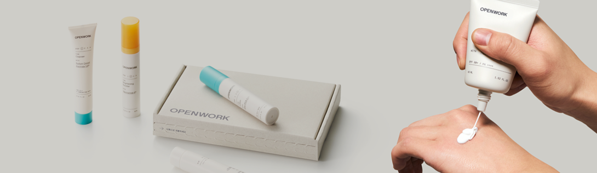

Story
바꾸기 위해, 우리는 조금 다르게 만듭니다.
오픈워크는 불합리한 시장을 바꾸고 현명한 소비를 위해 탄생했습니다.

정직한 성분을 사용해 제품을 만듭니다.
오픈워크는 검증되지 않은 성분을 사용하면서, 혁신적인 제품처럼 포장하는 관행에 반대합니다. 우리는 객관적으로 효과가 입증된 성분을 사용합니다. 나아가 제품의 효능을 좌우하는 핵심 성분을 효과적인 함량으로 담았습니다.
정직한 가격으로 제공합니다.
오픈워크는 원가의 3배를 더해 파는 비상식적인 가격 정책에 반대합니다. 우리는 과도한 이익, 유통비, 연예인 광고비를 줄여, 더 높은 품질에 투자하고 합리적인 가격을 만듭니다. 이것이 화장품의 진짜 가격이라 믿습니다.